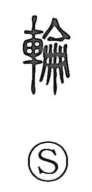

輪

Uncategorized
Kun: wa | On: rin
wheel ・ ring ・ circle ・ to revolve
Explanation
A phono-semantic character: the 車 element supplies the sense of a vehicle and thus a wheel, while 侖 (rin) serves as the phonetic and evokes things gathered into a coherent whole. From this composition the graph first names the wheel of a vehicle and then extends to the circular form itself and the motions it implies—turning, revolving, and the surrounding circuit traced by such movement.